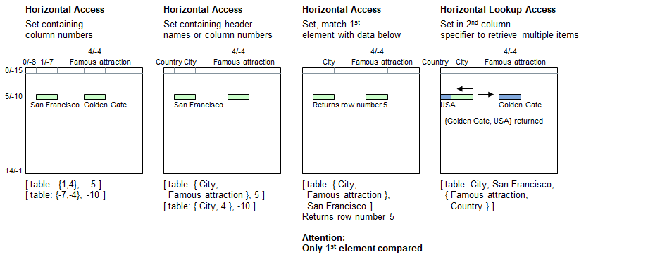

Introduction
Instead of specifying one column header name (string) or column number (numeral), a set can be used to specify multiple columns in order to access multiple cells in a specific row at a time. The resulting data read out is a set containing the data which corresponds to the headers specified accordingly.
Syntax for Full Table Specification
The table must be referenced inside brackets using a combination of strings and/or numerals and/or sets. These may be constant strings and numbers or expressions providing strings and numerals, as well as sets.
| [ | Table Name | : | Multiple Column Specifier | , | Simple Row Specifier | ] |
|---|---|---|---|---|---|---|
| Must be a string | - Set containing | - Matching contents (string), or | ||||
| header names and/or positive | - Positive row number, or | |||||
| or negative column numbers | - Negative row number |
Syntax for lookup access (Choose column, followed by the row, and pick up data from a different column):
| [ | Table Name | : | Simple Column Specifier | , | Simple Row Specifier | , | Multiple Column Specifier 2 | ] |
|---|---|---|---|---|---|---|---|---|
| Must be a string | - Header name, or | - Matching contents (string), or | - Set containing | |||||
| - Positive column number, or | - Positive row number, or | header names and/or positive | ||||||
| - Negative column number | - Negative row number | or negative column numbers |
Lookup access: If a set is encountered in the Simple Column Specifier instead of a simple value (string or numeral), then the 1st parameter element will be used identifying the row. If it contains no elements, then no lookup can be made and an empty set will be returned.
Principle

Programming examples
table load( table, "Examples\Cities.csv");
echo( [ table: {1,4}, 5 ] );
echo( [ table: {-7,-4}, -10 ], new line );
echo( [ table: { City, 4 }, -10 ] );
echo( [ table: { City, Famous attraction }, 5 ], new line );
echo("Special case");
echo( [ table: { }, -10 ] ); // returns empty set
echo( [ table: { City, Famous attraction }, San Francisco ] );
// No exception to rule: It retrieves "San Francisco" and "Golden Gate"
echo( [ table: City, San Francisco, { Famous attraction, Country } ] );Output - Staying in San Francisco
{'San Francisco','Golden Gate'}
{'San Francisco','Golden Gate'}
{'San Francisco','Golden Gate'}
{'San Francisco','Golden Gate'}
Special case
{}
{'San Francisco','Golden Gate'}
{'Golden Gate','USA'}